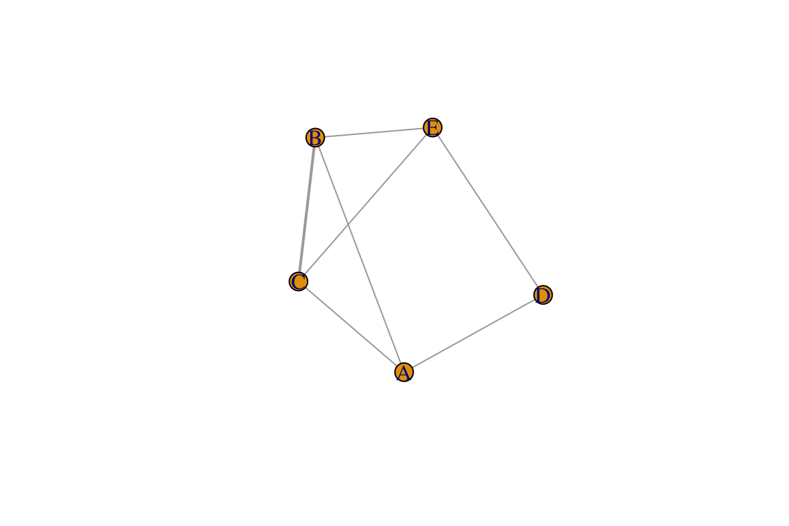
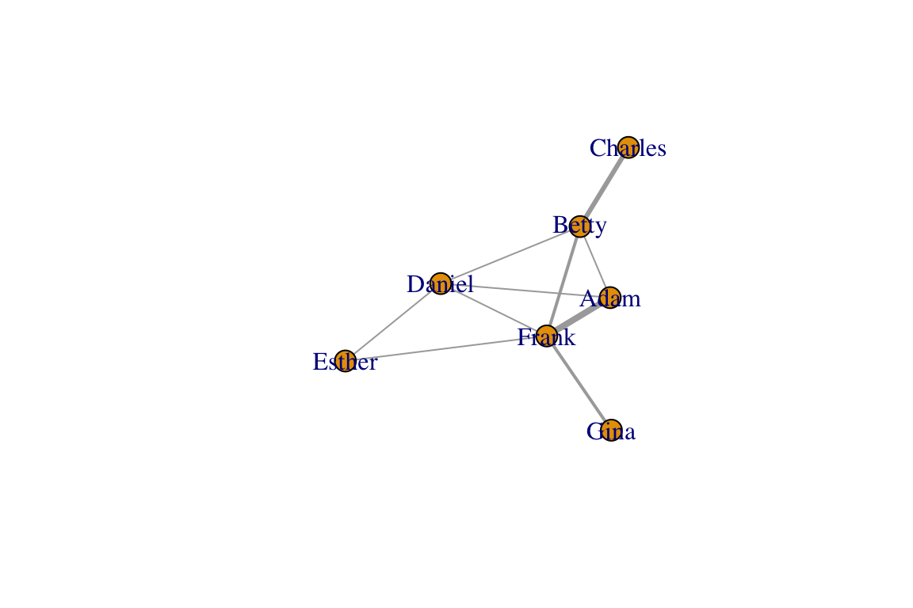
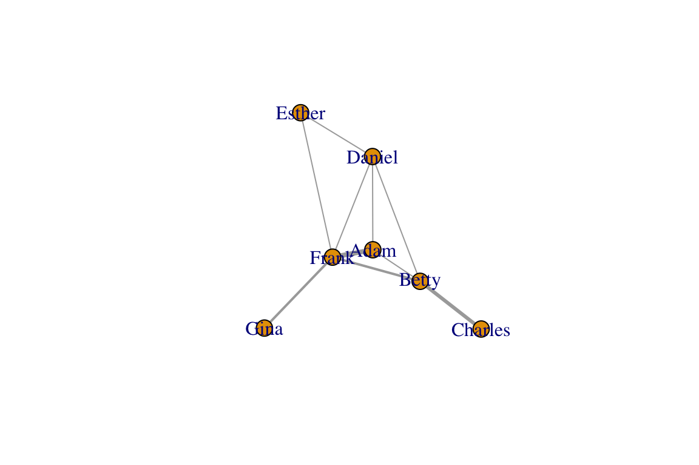

2.Data Formats for Networks
updated 01/05/23
##2.1 Basic Data Formats For Networks
There are three basic data formats that can be used to describe networks: adjacency matrix, edge list, and adjacency list. Each format has its pros and cons. There are other variations on these (e.g., a biadjacency matrix for bipartite networks).
###2.1.1 Adjacency Matrix
An adjacency matrix is a matrix in which the rows and columns represent different nodes. In an unweighted adjacency matrix, the edges (i.e., lines) are represented by 0 or 1, with indicating that these two nodes are connected. If two nodes are connected, they are said to be adjacent (hence the name, adjacency matrix). In a weighted matrix, however, you can have different values, indicating different edge qualities (or tie strengths).
Let’s start by loading the igraph package and setting up
a toy network (same as in Lesson 1:
Intro)
library(igraph)
g=make_graph(~A-B-C-A, D-E-F-D, A-F)
V(g)$color=c("white", "red", "green", "blue", "orange", "yellow")
E(g)$weight=1:7
E(g)$color=rainbow(7)We can now extract the adjacency matrix of the network we created,
called g:
as_adjacency_matrix(g, sparse=F)## A B C D E F
## A 0 1 1 0 0 1
## B 1 0 1 0 0 0
## C 1 1 0 0 0 0
## D 0 0 0 0 1 1
## E 0 0 0 1 0 1
## F 1 0 0 1 1 0Note the argument sparse=F in the code
above. This displays the adjacency matrix with 0s. If
sparse=T, the output is a special format of the matrix
where the 0s are replaced with a period (this is to make it easier to
see very large matrices).
Also note that, because the network is undirected and unweighted, the corresponding adjacency matrix is symmetrical (value for row A, column B is identical to row B, column A) and binary (values are 0 or 1).
###2.1.2 Edge List
An edge list is a two-column list of the two nodes that are connected in a network. In the case of a directed network, the convention is that the edge goes from the vertex in the first column to the vertex in the second column. In an undirected network, the order of the vertices don’t matter. For weighted networks, you may have a third column that indicates the edge weight.
You can get the edgelist of any igraph object as well:
as_edgelist(g)## [,1] [,2]
## [1,] "A" "B"
## [2,] "A" "C"
## [3,] "A" "F"
## [4,] "B" "C"
## [5,] "D" "E"
## [6,] "D" "F"
## [7,] "E" "F"###2.1.3 Affiliation Matrix (aka individual-by-group matrix)
In many cases, we will construct social networks from co-membership in groups. For example, we would draw edges between individuals based on their patterns of co-occurrence in a flock. Similarly, we could construct networks of species co-occurrences in populations, etc.
To do this, we would first need data in a matrix in which rows represent individuals (or species) and columns represent groups (or populations). Note that you could flip the columns and rows–either way is fine. You just need to be aware of how you arranged it.
Here’s a toy example in which individuals A through E occur in different combinations in 4 groups.
A=c(1,1,0,0)
B=c(1,0,1,0)
C=c(1,0,1,0)
D=c(0,1,0,1)
E=c(0,0,1,1)
aff=matrix(c(A,B,C,D,E),nrow=5,byrow=TRUE)
dimnames(aff)=list(c("A","B","C","D","E"),c("Group1","Group2","Group3","Group4"))
aff #The individual-by-group matrix## Group1 Group2 Group3 Group4
## A 1 1 0 0
## B 1 0 1 0
## C 1 0 1 0
## D 0 1 0 1
## E 0 0 1 1There are different ways to convert this data into a social
network–i.e., a network that describes which individual co-occurs with
which individual in groups. One simple way is to do what is called a
one-mode projection of this data by multiplying this
matrix with the transpose of itself. Note that matrix
multiplication notation is %*% in R.
aff %*% t(aff)## A B C D E
## A 2 1 1 1 0
## B 1 2 2 0 1
## C 1 2 2 0 1
## D 1 0 0 2 1
## E 0 1 1 1 2This resulting matrix is now an adjacency matrix in which the diagonal represents how many groups each individual participated in (2 for all of them), and the off-diagonals represent the number of times a pair of individuals were int he same group. You can use this as the adjacency matrix to convert this into a network:
m2=aff %*% t(aff)
g2=graph_from_adjacency_matrix(m2, "undirected", weighted=T, diag=F)
plot(g2, edge.width=E(g2)$weight)
###2.1.4 Adjacency List
An adjacency list, also known as a node list, presents the ‘focal’ node on the first column, and then all the other nodes that are connected to it (i.e., adjacent to it) as columns to the right of it. In a spreadsheet, would be a table with rows with different number of columns, which is often very awkward to deal with, like this:
| Focal Node | Neighbor_1 | Neighbor_2 | Neighbor_3 |
|---|---|---|---|
| A | B | C | F |
| B | A | C | |
| C | A | B | |
| D | E | F | |
| E | D | F | |
| F | A | D | E |
| — | — | — | — |
In R, you can display an adjacency list as an actual ‘list object’, with each item representing neighbors of each focal node:
as_adj_list(g)## $A
## + 3/6 vertices, named, from 956e4f0:
## [1] B C F
##
## $B
## + 2/6 vertices, named, from 956e4f0:
## [1] A C
##
## $C
## + 2/6 vertices, named, from 956e4f0:
## [1] A B
##
## $D
## + 2/6 vertices, named, from 956e4f0:
## [1] E F
##
## $E
## + 2/6 vertices, named, from 956e4f0:
## [1] D F
##
## $F
## + 3/6 vertices, named, from 956e4f0:
## [1] A D E##2.2 Data formats for directed and weighted networks Let’s consider some important aspects of data formats that come with networks that are directed or weighted. I will keep this short by listing some important things to consider, and a line of code that will display this.
###2.2.1 Directed networks
Let’s create an igraph object for a directed network called
dir.g. For directed networks, the adjacency matrix is not
symmetrical. Rather, the cell value is 1 if the edge goes from the
row vertex to the column vertex.
dir.g=make_graph(~A-+B-+C-+A, D-+E-+F-+D, A+-+F)
plot(dir.g)
as_adjacency_matrix(dir.g, sparse=F)## A B C D E F
## A 0 1 0 0 0 1
## B 0 0 1 0 0 0
## C 1 0 0 0 0 0
## D 0 0 0 0 1 0
## E 0 0 0 0 0 1
## F 1 0 0 1 0 0For directed networks with mutual edges (represented by double-edged arrows), the edge list lists both directions separately:
as_edgelist(dir.g)## [,1] [,2]
## [1,] "A" "B"
## [2,] "A" "F"
## [3,] "B" "C"
## [4,] "C" "A"
## [5,] "D" "E"
## [6,] "E" "F"
## [7,] "F" "A"
## [8,] "F" "D"You can see that, since the dir.g network object
contains one mutual edge (A<->F), the edge list has 8 rows, while
the edgelist for the undirected version of the network has 7 rows.
###2.2.1 Weighted networks Let’s now consider what the data formats
would look like. To do this, let’s go back to our original network,
g. Let’s say that the edge widths that we added represent
edge weights or values. Then, the adjacency matrix for this network can
be shown by using the attr= argument within the function to
call the adjacency matrix to specify the edge weights:
as_adjacency_matrix(g, sparse=F, attr="weight")## A B C D E F
## A 0 1 2 0 0 3
## B 1 0 4 0 0 0
## C 2 4 0 0 0 0
## D 0 0 0 0 5 6
## E 0 0 0 5 0 7
## F 3 0 0 6 7 0You can display the edge weights as an edgelist as well. In fact,
igraph has a convenient function that will display all of
the edge attributes together as a data frame:
as_data_frame(g)## from to weight color
## 1 A B 1 #FF0000
## 2 A C 2 #FFDB00
## 3 A F 3 #49FF00
## 4 B C 4 #00FF92
## 5 D E 5 #0092FF
## 6 D F 6 #4900FF
## 7 E F 7 #FF00DBRecall that in undirected networks, the “from” and “to” designation are arbitrary (it is simply organized in alphabetical order here).
If you want to show an edge list as a three-column matrix with the two nodes and edge weights only, you can just specify which edge attribute you want to use as the edge weight, e.g.:
as_data_frame(g)[,c("from", "to", "weight")]## from to weight
## 1 A B 1
## 2 A C 2
## 3 A F 3
## 4 B C 4
## 5 D E 5
## 6 D F 6
## 7 E F 7##2.3 Going from Data to Networks
###2.3.1 Creating a network from your edge list
Creating a network from an edgelist that you have created is easy. First, import the .csv file called “sample_edgelist.csv”.
edge.dat=read.csv("https://dshizuka.github.io/network2018/NetworkWorkshop_SampleData/sample_edgelist.csv")
edge.dat## V1 V2 weight
## 1 Adam Betty 1
## 2 Adam Daniel 1
## 3 Adam Frank 4
## 4 Betty Charles 3
## 5 Betty Daniel 1
## 6 Betty Frank 2
## 7 Daniel Esther 1
## 8 Daniel Frank 1
## 9 Esther Frank 1
## 10 Frank Gina 2So this data frame has three columns: the first two columns are the
edge list, and the third column is an edge value we called “weight”. If
we have the data organized this way, we can simply use a function called
graph.data.frame() to create a network we will call
eg.
set.seed(2)
eg=graph_from_data_frame(edge.dat, directed=FALSE)
eg## IGRAPH 3de1f0c UNW- 7 10 --
## + attr: name (v/c), weight (e/n)
## + edges from 3de1f0c (vertex names):
## [1] Adam --Betty Adam --Daniel Adam --Frank Betty --Charles
## [5] Betty --Daniel Betty --Frank Daniel--Esther Daniel--Frank
## [9] Esther--Frank Frank --Ginaplot(eg, edge.width=E(eg)$weight)
###2.3.2 Creating a network from your adjacency matrix
Importing an adjacency matrix written in .csv format is just slightly trickier. This is because you want R to know that first row is a header AND the first row contains row names rather than data. You also want R to recognize this data as a “matrix object”. We can use just one line of code to do this:
am=as.matrix(read.csv("https://dshizuka.github.io/network2018/NetworkWorkshop_SampleData/sample_adjmatrix.csv", header=T, row.names=1))
am## Adam Betty Charles Daniel Esther Frank Gina
## Adam 0 1 0 1 0 4 0
## Betty 1 0 3 1 0 2 0
## Charles 0 3 0 0 0 0 0
## Daniel 1 1 0 0 1 1 0
## Esther 0 0 0 1 0 1 0
## Frank 4 2 0 1 1 0 2
## Gina 0 0 0 0 0 2 0Now we have our adjacency matrix, and we are ready to convert this
into an igraph object! Note that this is a weighted adjacency
matrix. Note that we are going to add an argument
weighted=T to indicate that the edges have weights. The
results from the code below should look the same as above. We’ll call
this new network g, which will overwrite the previous graph
object of the same name.
g=graph_from_adjacency_matrix(am, mode="undirected", weighted=T)
plot(g, edge.width=E(g)$weight)
###2.3.3 Creating a network from group or site associations
There are two common instances when you might make a network from an affiliation matrix–that is, a matrix in which rows are individuals (or whatever element will be your node) and columns are ‘groups’ that these individuals belong to. We often build social networks out of data on co-membership in groups (flocks, herds, shoals, pods, etc.) across time and space. Most often, we apply a ‘gambit of the group’–that is, we assume that individuals that occur together in group are “associated”. Typically, an association index is calculated using the group membership data. For more detailed tutorial on this, see this page on social networks
- For in-depth discussion of the pros and cons of the ‘gambit of the group’ method, see Franks et al. (2010).
Next: 3. Plotting Basics